OTOBO Kanban Board¶
Description¶
The Kanban Board in OTOBO is a powerful visual tool designed to help teams manage and optimize their workflows effectively. It provides a clear and intuitive interface for tracking the progress of tasks, tickets, or issues in real-time, ensuring that team members are aligned and work is flowing smoothly from start to finish.
Visual Workflow Management: The board provides a visual representation of tasks, allowing users to easily see which tasks are in progress, completed, or pending.
Customizable Columns: Define and customize the columns to match the specific stages of your team’s workflow.
Drag and Drop Functionality: Easily move cards from one column to another by dragging and dropping, simplifying task updates.
Card Details and Comments: Click on any card to view detailed information, add comments, or attach files, enhancing collaboration.
Real-Time Updates: All changes made to the Kanban Board are instantly updated for all team members, ensuring transparency and up-to-date information.
Filtering and Search Options: Use advanced filters and search options to quickly find specific cards or tasks.
System requirements¶
Framework¶
OTOBO 11.0.x
Packages¶
Third-party software¶
-
Overview¶
Admin Guide
Overview - All Kanban Card Settings
KanbanTags - Visual Tag Management
User Guide
Kanban Board Layout Overview
Usage¶
To get the most out of your Kanban Board, the following requirements must be met:
Note
OTOBO must be installed: Ensure that OTOBO is installed.
Agents must be created: Ensure that all relevant agents have been set up in the system.
Groups must be established: Define and create the necessary groups for organization.
Agents must be assigned to groups: Make sure each agent is properly assigned to the appropriate group.
A customer must be created: Register the necessary customer in the system.
A customer user must be created: Set up a user account for the customer to enable access.
Processes must be created or already exist in order to create a Process Kanban Board.
Dynamic Fields must be created or already exist in order to create a Dynamic Field Kanban Board.
By ensuring these steps are completed beforehand, you can seamlessly implement and operate the Kanban Board.
Admin Guide¶
This guide provides a step-by-step instruction on how to configure and manage Kanban Boards after successfully installing the Kanban module using the package manager.
Accessing Kanban Board Management¶
To access the Kanban Board Management interface:
Navigate to the Admin area located in the top-left corner of the navigation bar and select Overview.
Fig. 1 Kanban navigation bar¶
You can either search for “Kanban” using the search function in the top left or find the tile under “Miscellaneous”.
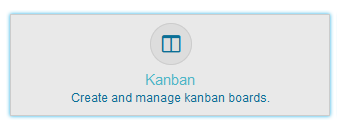
Fig. 2 Admin Overview - Ticket Settings - Kanban Modul¶
Kanban Board Management Interface¶
In the Kanban Board Management interface, you have the following options:
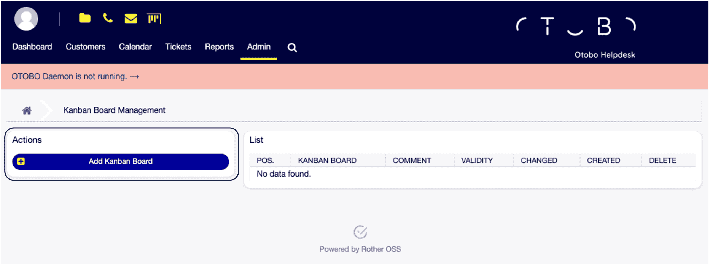
Fig. 3 Kanban Board Management - Add Kanban Board¶
Create new boards
Manage existing boards
Arrange the order of Kanban Boards via drag and drop.
Click on Add Kanban Board to create your first Kanban Board.
General Settings¶
Under the General menu, you can configure the basic settings for your first Kanban Board.
Board: The configuration begins by entering the Board Name.
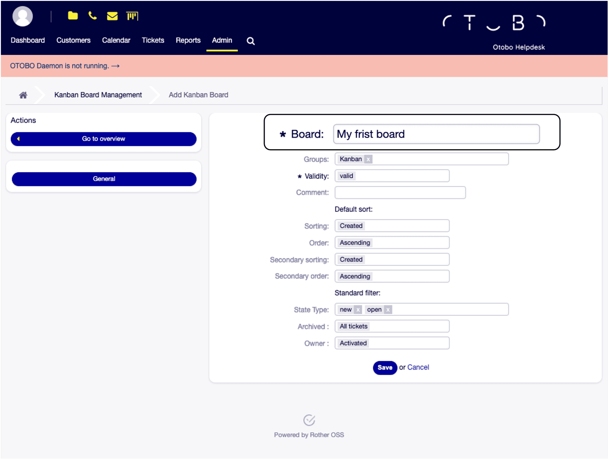
Fig. 4 Add Kanban Board - General - Board Name¶
Board Type: You have the option to choose from different board types. Special Note: If the board type “Processes” is selected, the list will expand to show a selection field with your existing processes.
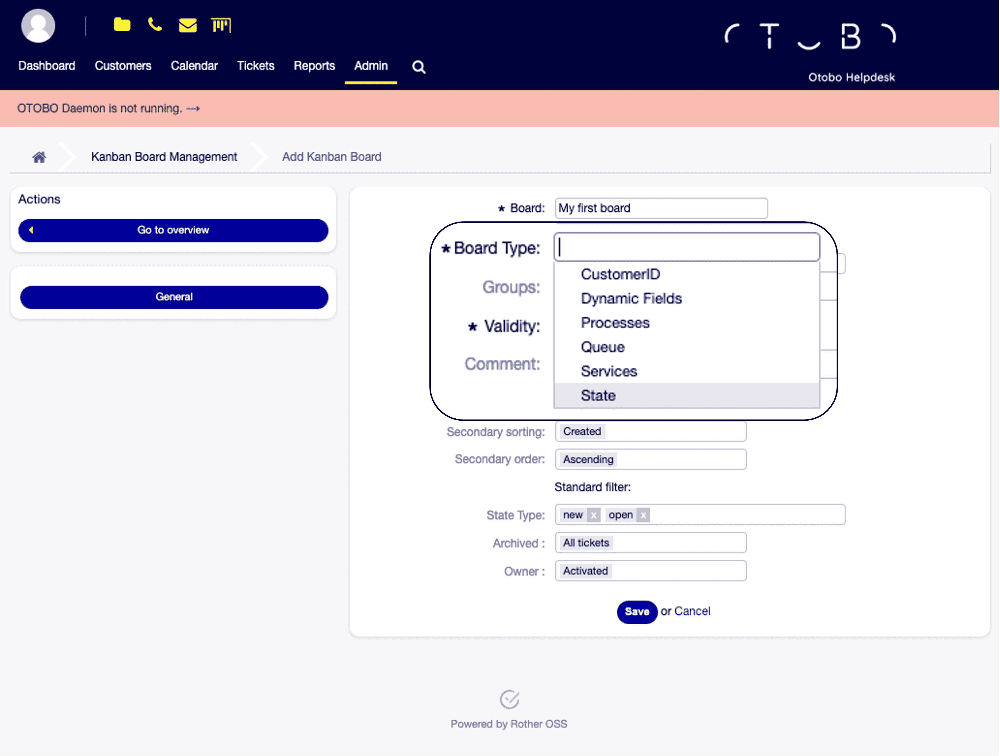
Fig. 5 Add Kanban Board - General - Board Type¶
Note
For the board type Processes, the processes must also be defined, which are then displayed under the board type selection - as soon as the board type Processes is selected. The activities associated with the process are then available as columns.
Groups: You can define which users have access to the Kanban Board. Note that the group “Kanban” is required for permissions to the Kanban module. Further access control can be managed through additional groups.
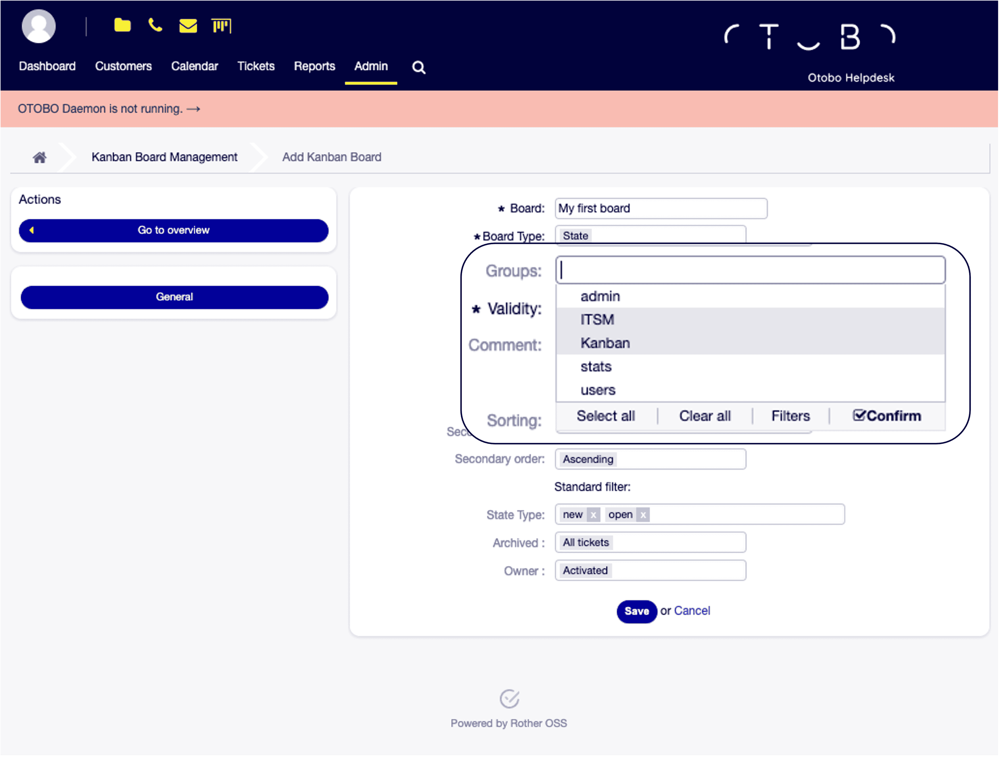
Fig. 6 Add Kanban Board - General - Groups¶
Validity: Use this option to activate, deactivate, or temporarily lock boards.
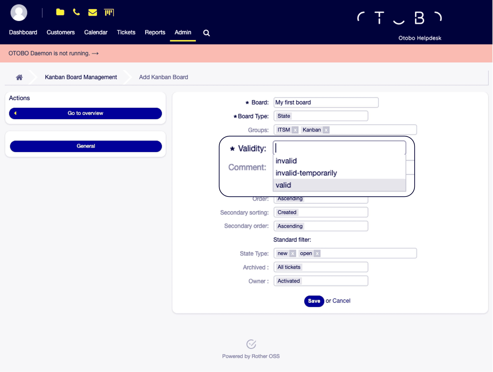
Fig. 7 Add Kanban Board - General - Validity¶
Sorting Options¶
Sorting allows you to configure the Kanban Board according to the desired criteria.
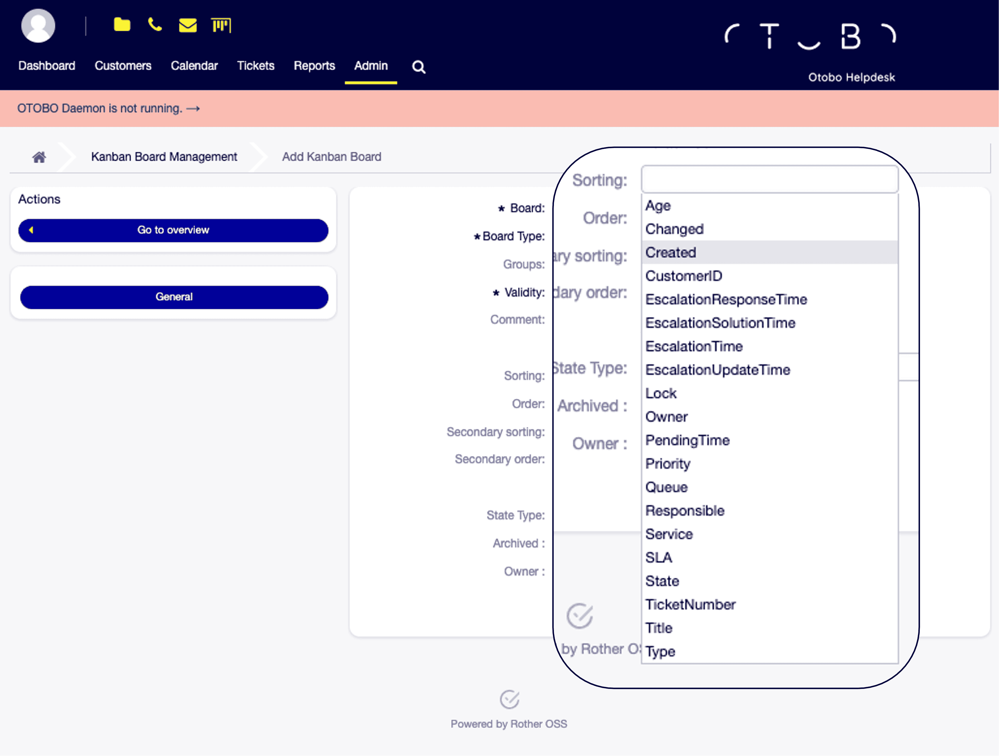
Fig. 8 Add Kanban Board - General - Sorting options¶
You can define the order as ascending or descending.
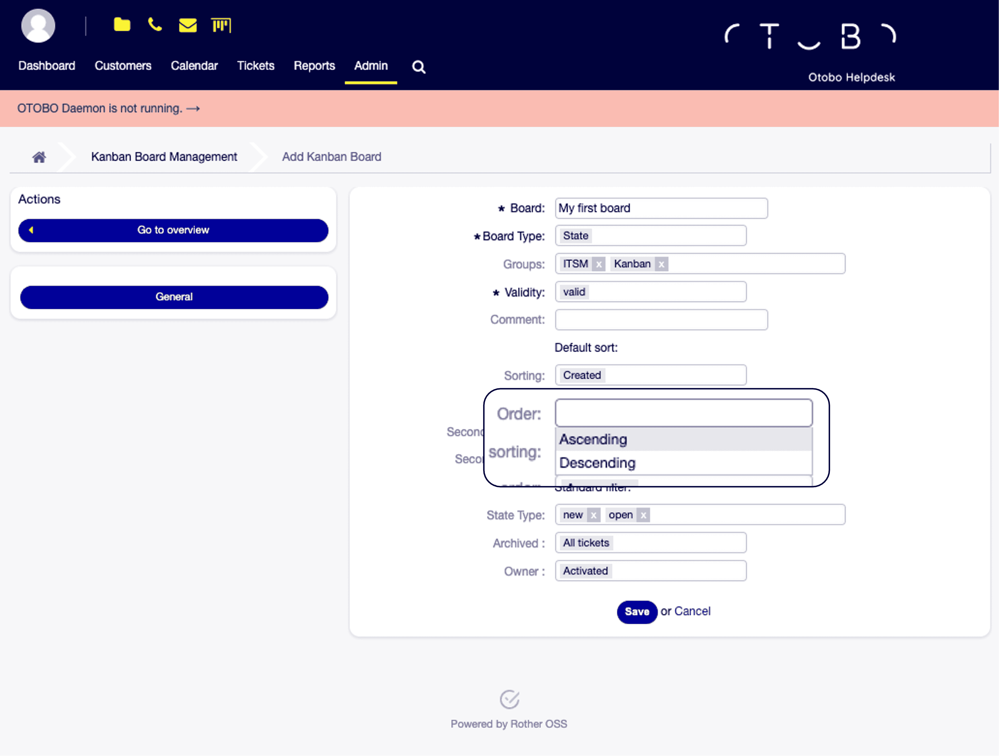
Fig. 9 Add Kanban Board - General - Order¶
Standard Sorting by State Type: Allows you to further filter options based on the ticket state.
Fig. 10 Add Kanban Board - General - State Type¶
Ticket Display Options: You can choose to display all tickets, only archived, or only non-archived tickets.
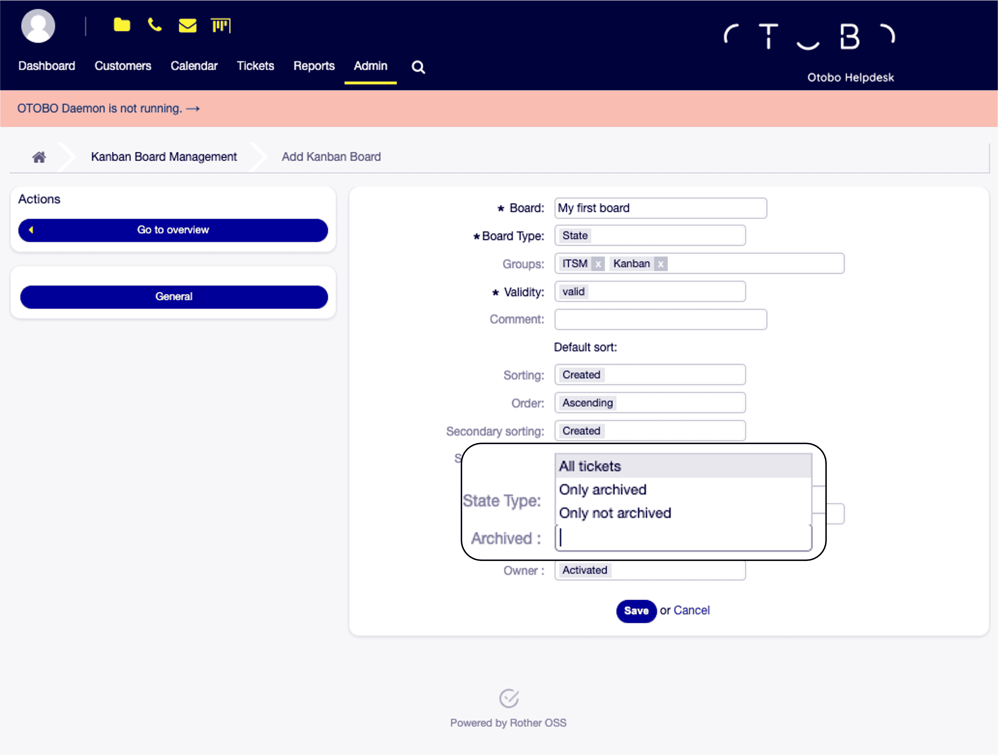
Fig. 11 Add Kanban Board - General - Archived¶
Standard Filter “Owner”: Allows you to create boards assigned to you. Save the created board by clicking on the Save button.
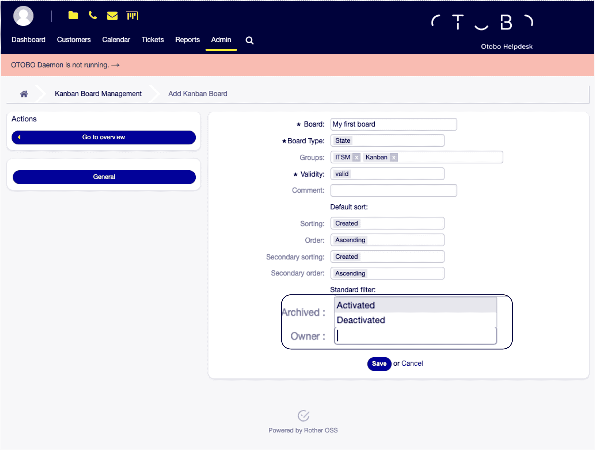
Fig. 12 Add Kanban Board - General - Owner¶
Completing Board Configuration¶
After creating your first board, select your board to proceed with further settings by clicking on the boards name.
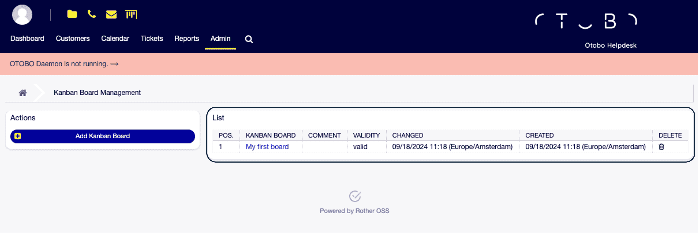
Fig. 13 Kanban Board Management - Board Overview¶
If you have already clicked on the Kanban icon in the navigation bar, you will be notified about the missing configuration.
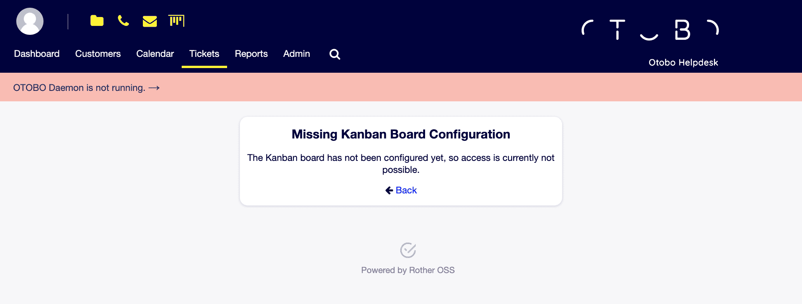
Fig. 14 Kanban Board Management - Missing Kanban Board Configuration Info¶
Column Configuration¶
Under the Columns menu:
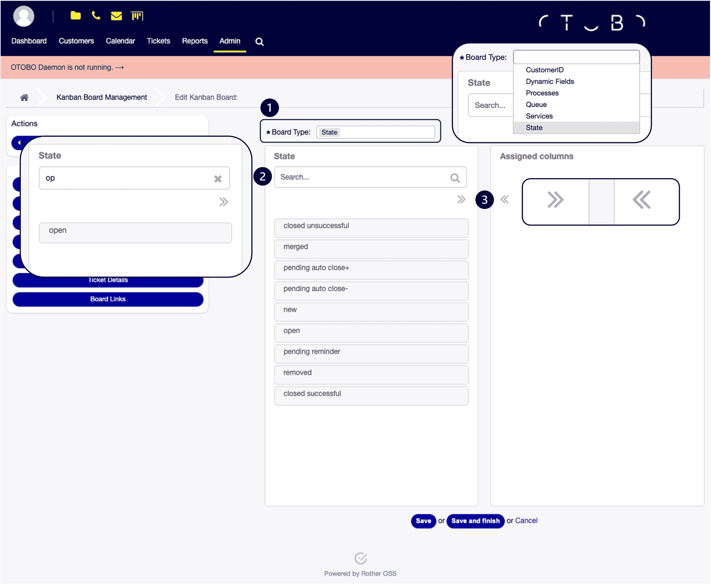
Fig. 15 Edit Kanban Board - Columns¶
You can change the board type again via the board type selection.
Use the search function to filter columns.
Select / de-select all columns at once using the square brackets.
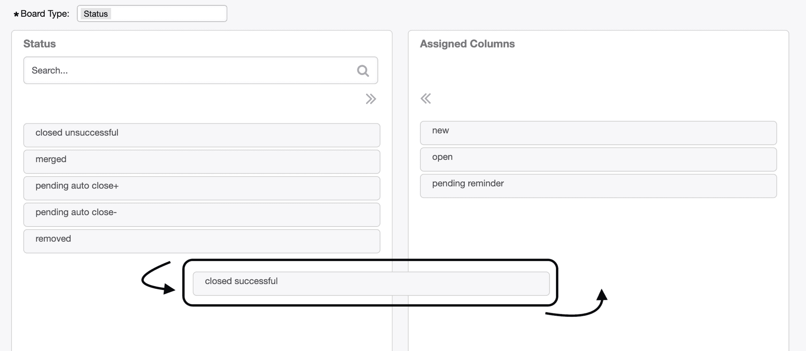
Fig. 16 Edit Kanban Board - Drag & Drop Columns¶
Select a single column using drag & drop and place them in the order you want them to be displayed on the kanban board. After making your selection, make sure to click Save.
Note
If you select dynamic fields as the board type, you must also select a dynamic field whose selection options can then be configured as columns. This is done via a drop-down menu which appears above the drag & drop area.
Swimlanes Configuration¶
Swimlanes are divided into three categories: Priority, Owner, and Queue, each with corresponding selection options.
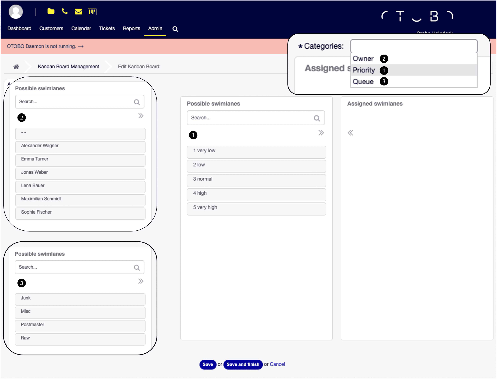
Fig. 17 Edit Kanban Board - Swimlanes¶
Changing the category results in the associated swimlanes being loaded.
Note
If no specific swimlanes are defined, all tickets are displayed in one large lane.
Quick Filters¶
Use Quick Filters to create custom filters that are easily accessible right on your board.
To create a new filter:
Click on New Filter.
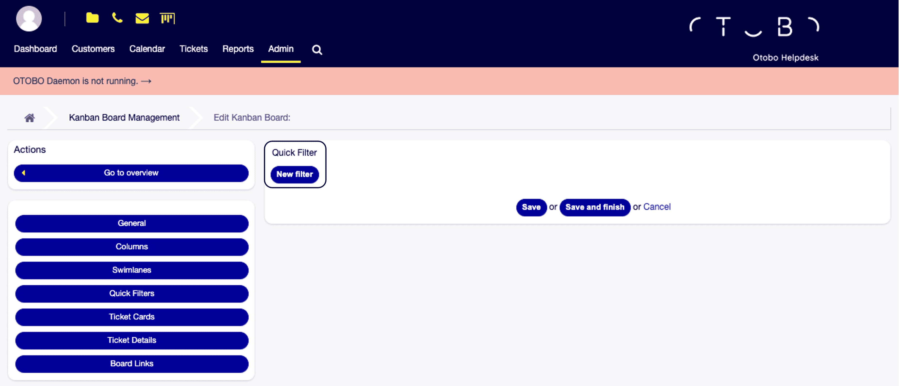
Fig. 18 Edit Kanban Board - Quick Filter - New Filter¶
Choose a name, describe your filter, and use your desired filter query.
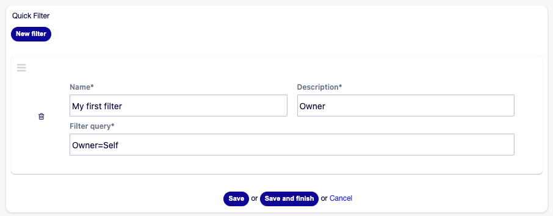
Fig. 19 Edit Kanban Board - Quick Filter Configuration¶
Note
Filters are defined as a chained string of key-value pairs.
Example:
Queue=Junk,Postmaster,Raw
or:
State=new;Priority=3 normal
Negation is also supported.
Example:
Queue=Junk,Postmaster,Raw
or:
State!=new;Priority!= 5 very high
Everything can be combined.
Example:
Queue=Misc,Junk;Priority!=3 normal
Available filters:
- State
- Queue
- Priority
- Type
- Service Type
- SLA
For own tickets:
Owner=Self,LoginName,OtherLoginName,...
Dynamic fields:
DynamicField_Name=Value1,Value2,...
Wildcard support:
(*Value1*, *Value2, Value3*)
A wildcard must always be used for dynamic fields with a multiple selection in order to obtain correct results:
DynamicField_MultipleSelect=*Value1*,*Value2*
You can also adjust the order of the quick filters displayed on the board using drag and drop. Make sure to click Save after making changes.
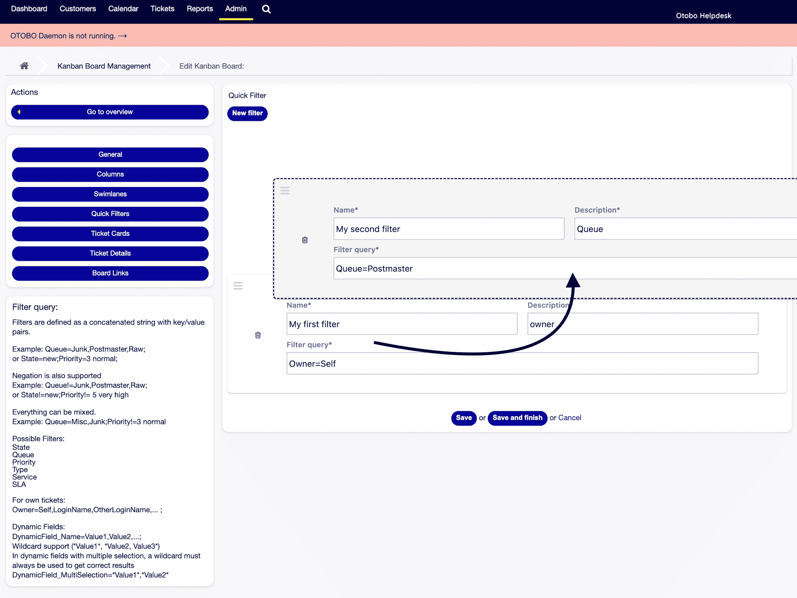
Fig. 20 Edit Kanban Board - Drag & Drop Quick Filter¶
Ticket Card Configuration¶
Under the Ticket Cards menu:
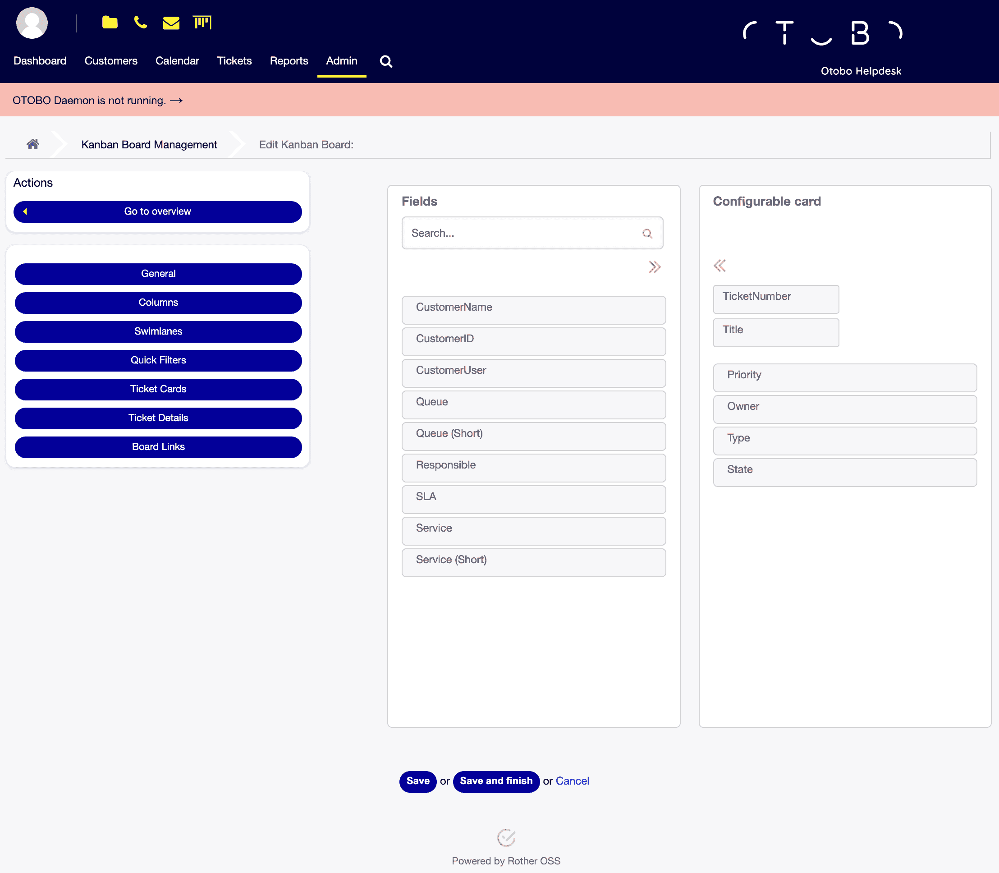
Fig. 21 Edit Kanban Board - Ticket Card Field Configuration¶
You can flexibly configure the contents of the cards.
Don’t forget to save your selection.
Ticket Details Configuration¶
Under the Ticket Details menu:
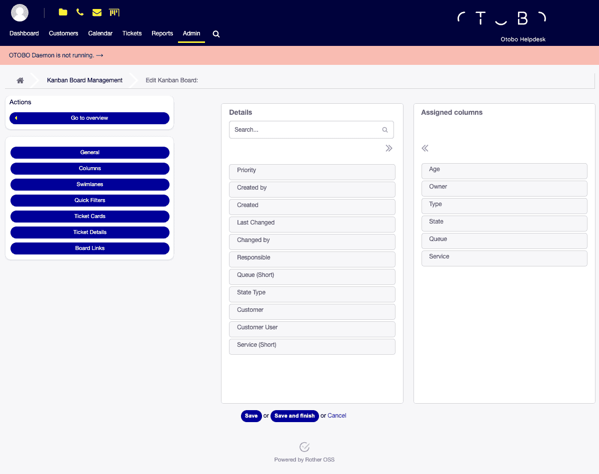
Fig. 22 Edit Kanban Board - Ticket Details Configuration¶
You can flexibly configure the details displayed when a card is clicked on the Kanban Board.
Remember to save your selection.
Board Links¶
The Board Links menu allows you to create custom buttons with links to keep all necessary functions just a click away.
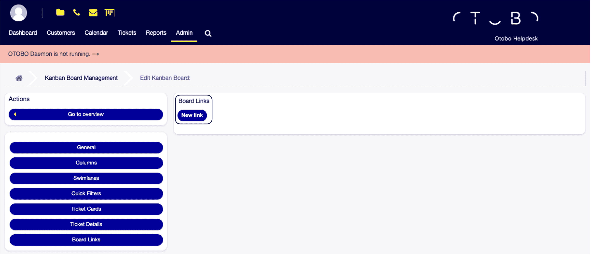
Fig. 23 Edit Kanban Board - Board Links - New link¶
Start by creating a new board link.
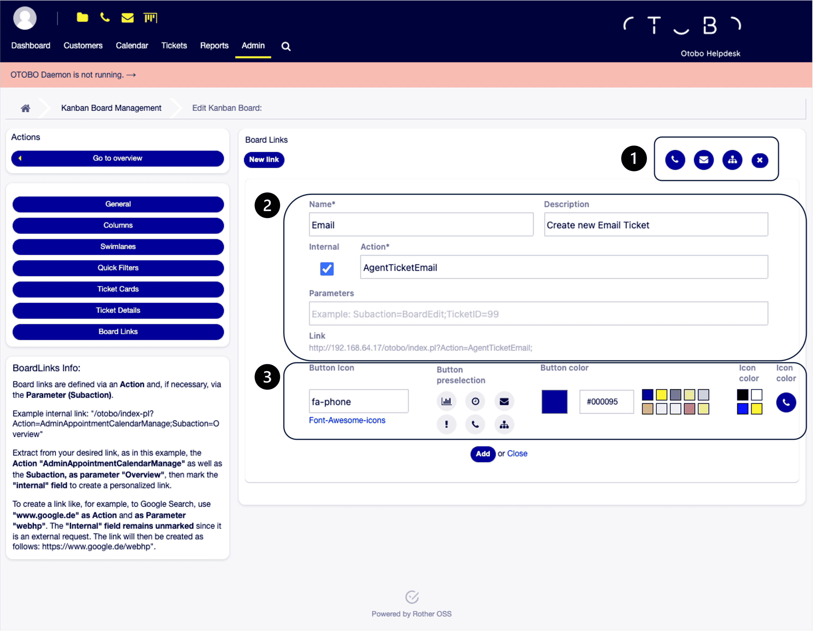
Fig. 24 Edit Kanban Board - Board Links Configuration¶
Predefined link quick selection
Click on one of the icons to create a predefined link
Board Link Configuration
Tip
Board Links Information:
Board links are defined by an action, and optionally, a parameter (sub-action).
Example of an internal link: /otobo/index.pl?Action=AdminAppointmentCalendarManage;Subaction=Overview.
Extract from your desired link, as in this example, the Action “AdminAppointmentCalendarManage” and the Subaction as parameter “Overview”. Then mark the “internal” field to create a personalized link.
For an external link, such as to Google Search, use “www.google.de” as the Action and “webhp” as the Parameter. The “Internal” field remains unmarked since it is an external request. The link will be created as follows: https://www.google.de/webhp.
3. Board Link Icon Configuration - You can flexibly configure your own icons by using Font-Awesome 4 Icons.
You can also adjust the order of the board links displayed on the board using drag and drop. Make sure to click Save after making changes.
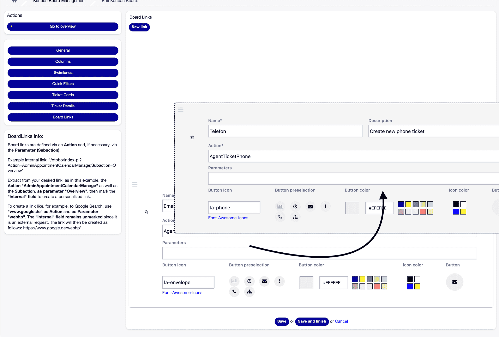
Fig. 25 Edit Kanban Board - Order Board Links by Drag & Drop¶
Note
Board Link System Configuration
In the System Configuration - Kanban - BoardLinkIcons, you also have the option to customize the default board link colors, default board link icons, and default button text colors according to your preferences. For more details, refer to System Configuration - Board Links.
Congratulations!¶
You have now completed the configuration of your first Kanban Board.
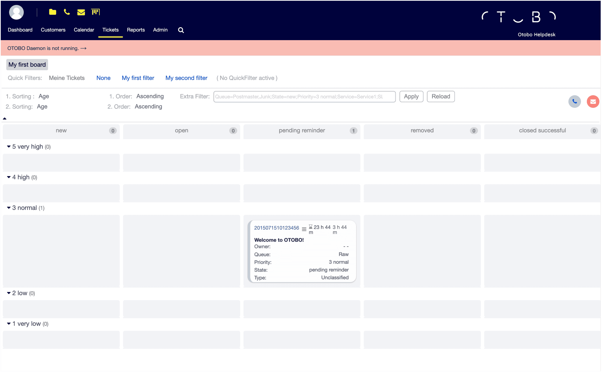
Fig. 26 Kanban Board view - My first board¶
Board Management¶
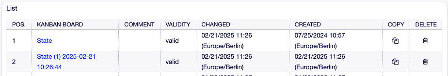
It is possible to copy boards with all settings. This can be very useful when creating multiple boards with similar definitions, eliminating the need to manually configure everything each time.
System Configuration - Kanban Settings¶
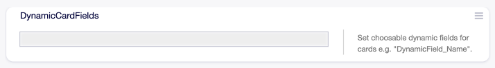
Fig. 27 Kanban Board View - Dynamic Field Selection¶
You can set selectable dynamic fields for cards, such as “DynamicField_Name”.
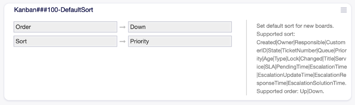
Fig. 28 Kanban Board View - Default Sorting Options¶
Set the default sorting criteria for new boards. Supported sorting fields include:
Created
Owner
Responsible
CustomerID
State
TicketNumber
Queue
Priority
Age
Type
Lock
Changed
Title
Service
SLA
PendingTime
EscalationTime
EscalationUpdateTime
EscalationResponseTime
EscalationSolutionTime
Supported order: ascending | descending.
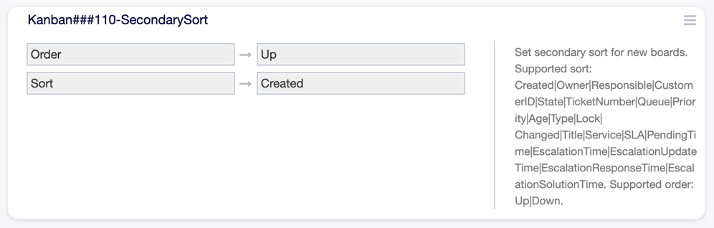
Fig. 29 Kanban Board View - Secondary Sorting Options¶
Set the secondary sorting criteria for new boards. Supported sorting fields and orders are the same as for the primary sorting.
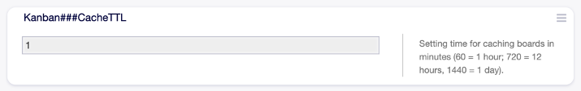
Fig. 30 Kanban Board View - Caching Settings¶
- Configure the caching time for boards in minutes.
- Examples:
60 = 1 hour
720 = 12 hours
1440 = 1 day
0 = caching deactivated
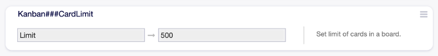
Fig. 31 Kanban Board View - Card Limit¶
Set the maximum number of cards that can be displayed on a board.
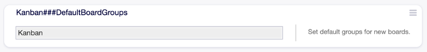
Fig. 32 Kanban Board View - Default Groups¶
Assign default groups for new boards.
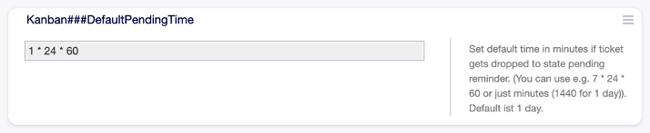
Fig. 33 Kanban Board View - Default Pending Reminder Time¶
- Set the default time in minutes for tickets moved to the pending reminder state.
- Example:
7 * 24 * 60 for one week
1440 for one day (default setting).
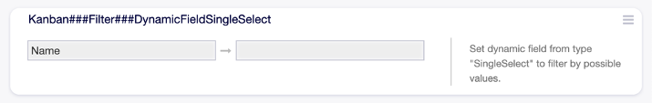
Fig. 34 Kanban Board View - Dynamic Field Filtering¶
Configure a dynamic field of type “SingleSelect” to filter tickets based on selectable values.
System Configuration - Card Settings¶
In the admin area, you can access further Kanban card settings:
Therefore you have to navigate to Admin - Overview.
Fig. 35 Kanban navigation bar¶
Search for System Configuration
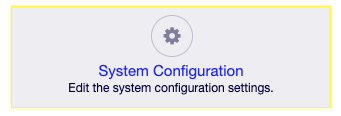
Fig. 36 Admin Overview - Ticket Settings - Kanban Modul¶
Select Kanban -> Card to open the card settings.
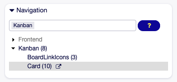
Fig. 37 Navigation - Kanban -> Card¶
Overview - All kanban card settings
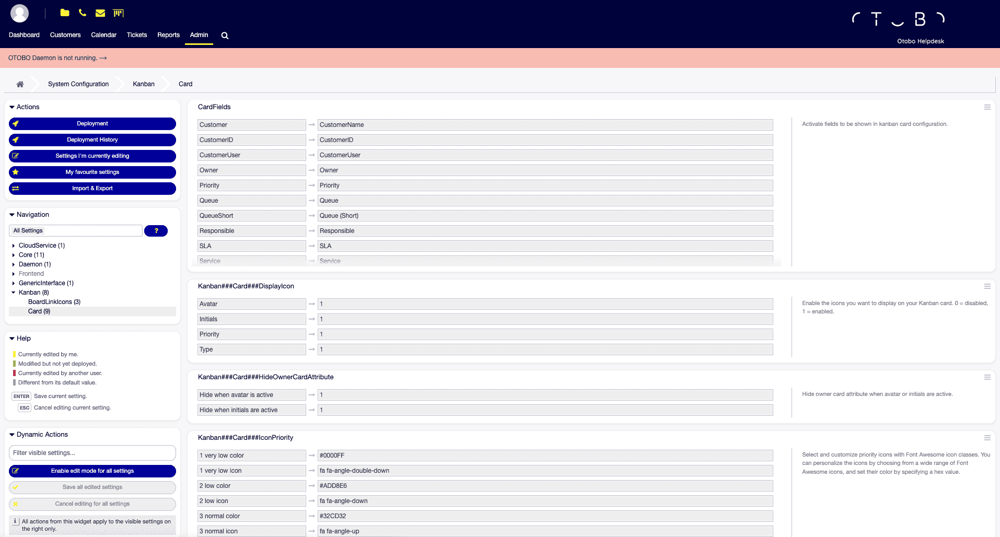
Fig. 38 System Configuration - Kanban Card Settings¶
Kanban Ticket Card Color Setting
You have the option to customize the color of a Kanban card in various ways:
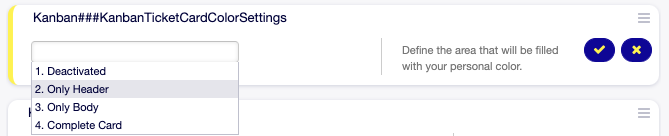
Fig. 39 Kanban Ticket Card Color Settings¶
Deactivated: Turn off color effects if you prefer a simpler appearance.
Only Header: Change the color of the card’s header.
Only Body: Adjust the color of the card’s body.
Complete Card: Apply a color to the entire card.
Note
Initially, default pastel-colors are loaded and applied to the cards, which the user can customize through their personal preferences.
Kanban Ticket Card Highlighting Setting
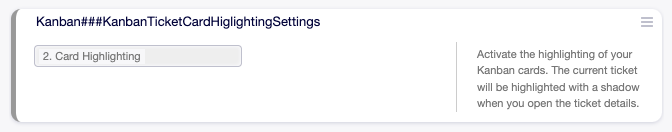
Fig. 40 Kanban Ticket Card Highlight Setting¶
When this effect is enabled, the selected Kanban card will be highlighted in a distinct color when its ticket details are opened. This feature helps users easily identify the active card they are working on.
Kanban Ticket Card Hover Effect Setting
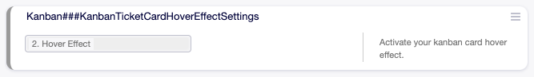
Fig. 41 Kanban Ticket Card Hover Effect Setting¶
The hover effect allows users to easily identify and interact with Kanban cards by changing their appearance when the cursor is hovered over them. When this effect is enabled, the card will display a subtle highlight and shadow, making it visually distinct from other cards. This helps users quickly locate and focus on specific cards while navigating the Kanban Board.
System Configuration - Card Icon Settings¶
To activate the icons you have to enable them first.
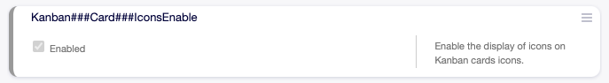
Fig. 42 Enable Kanban Ticket Card Icons¶
Choose individual icons you want to hide.
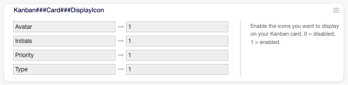
Fig. 43 Display Kanban Ticket Card Icons¶
You can hide the owner in the card if the avatar or initials are active.
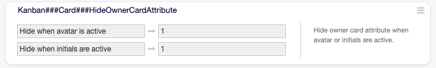
Fig. 44 Hide Kanban Card attribute owner¶
Choose your own symbols (Font-Awesome 4 Icons) and colors (hex) for the priority icons.
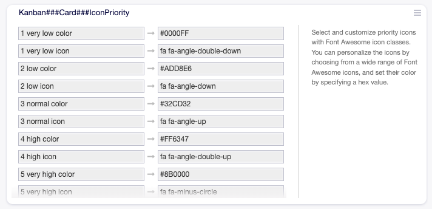
Fig. 45 Kanban Card Icon Priority Settings¶
For Icon Type, you also have options to flexibly configure the icons and the color.
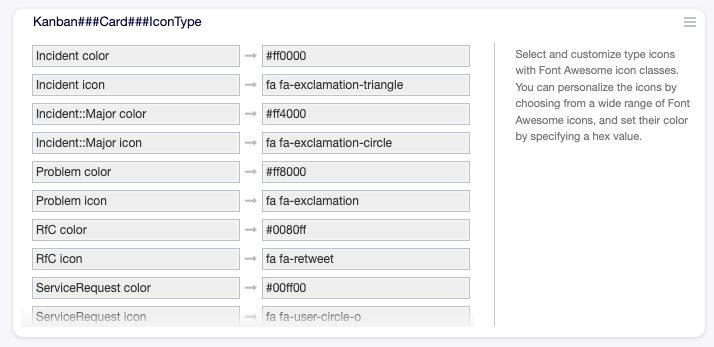
Fig. 46 Kanban Card Icon Type Settings¶
Remember to click the confirmation button after making changes to the settings; otherwise, the deployment will not be executed, and the editing will remain open.
Click on the banner under the dashboard navigation which now informs you to deploy the undeployed settings.
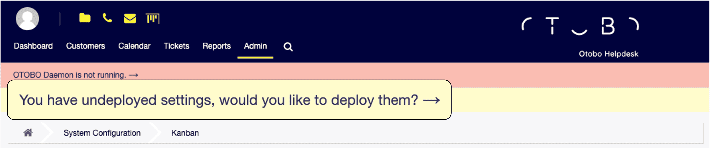
Fig. 47 Info - Undeployed changes¶
Select the changes you want to deploy and click on “Deploy selected changes” to confirm and make them effective.
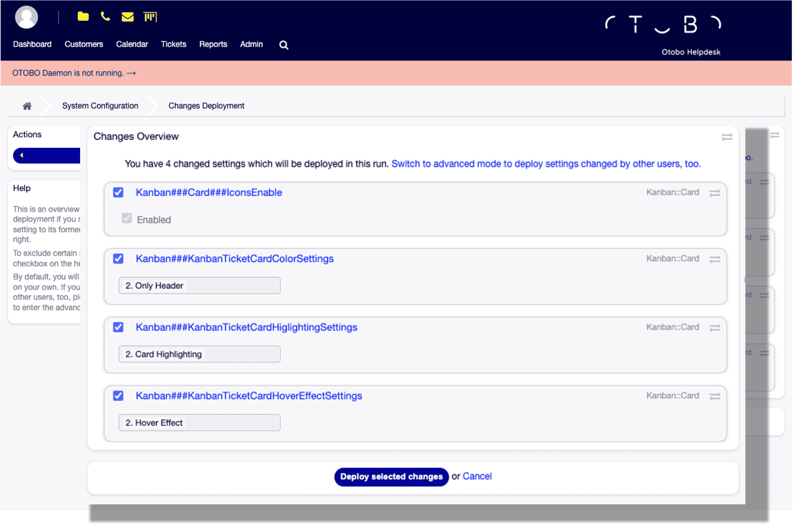
Fig. 48 Changes Deployment - Changes Overview - Deploy selected changes¶
After reloading the Kanban board, your configured Kanban card is displayed.
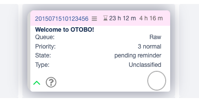
Fig. 49 Kanban Card¶
System Configuration - Board Links¶
In the System Configuration - Kanban - BoardLinkIcons, you also have the option to customize the default board link colors, default board link icons, and default button text colors according to your preferences.
You can flexibly configure the default icons by using Font-Awesome 4 Icons.
Default Board Link Colors:
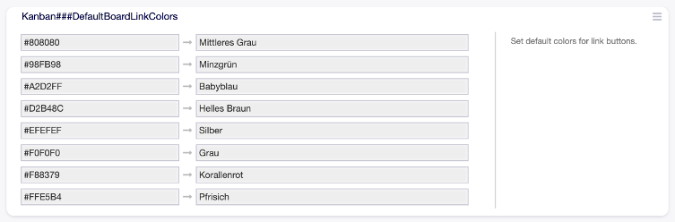
Fig. 50 Default Board Link Colors - Configuration¶
Default Board Link Icons:
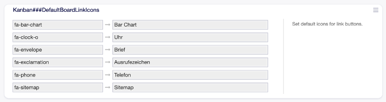
Fig. 51 Default Board Link Icons - Configuration¶
Default Button Text Color (Icon Color)
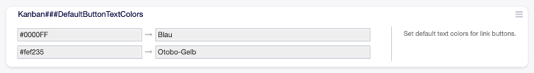
Fig. 52 Default Button Text Color - Configuration¶
Custom Card Links
Two links have been added to the header, pointing to ‘Note’ and ‘Classify Ticket’. This allows for quick modifications to the ticket directly from the Kanban Board. You can find the same links under the ticket details as well.
It is also possible to define links in the system configuration that open a popup window for the corresponding ticket. A maximum of three links can be added to avoid overloading the header.
User Guide¶
Kanban Board Layout Overview¶
Fig. 59 Kanban navigation bar¶
Boards Display: The top row displays the available boards.
Quick Filters: Below the boards, there are flexibly configurable quick filters. The “My Tickets” filter is set as the default.
Collapse Filters and Boards: Click on the triangle icon to collapse the filters and boards for a cleaner view.
Sorting Options: Below the quick filters, you will find additional sorting options and the ability to set the order.
Apply Extra Filters: Enter any extra filter values as needed and apply them to refine the board view.
Reload the Page: Refresh the page as needed to update the displayed information.
Board Link Buttons: Use the board link buttons to quickly and easily navigate to your desired destination.
Kanban Card Overview¶
Fig. 60 Kanban navigation bar¶
Ticket Number: Click on the ticket number to open the ticket in a new window.
Ticket Classification: Opens a pop-up window with options to classify the ticket.
Lock Info: Indicates a locked ticket.
Pending Reminder: Shows if a reminder is pending.
Ticket Age: Displays the age of the ticket.
Priority Icon: Visual representation of the ticket’s priority level.
Type Icon: Displays the type of ticket.
User Initials: Shows the initials of the user associated with the ticket.
Kanban Card Details Overview¶
Fig. 61 Kanban navigation bar¶
By clicking on a ticket, A detailed view of the ticket opens in the right screen section, including a description and associated articles.
Kanban Card Color Settings¶
To customize your Kanban Card according to your preferences:
Fig. 62 Kanban navigation bar¶
Click on your profile to open the drop down menu with the personal preferences
Fig. 63 Kanban navigation bar¶
Navigate from Personal Preferences to Miscellaneous.
Fig. 64 Kanban navigation bar¶
Open the color picker to choose your desired card color.
Note
Pastel colors are recommended for user interfaces because they provide a soft, calming aesthetic that reduces visual strain and creates a pleasant, neutral environment for users to focus on content. Additionally, they are versatile due to their subtlety and can be adapted to fit various design preferences.
Fig. 65 Kanban navigation bar¶
Confirm the process and save the changes.
Fig. 66 Kanban navigation bar¶
Kanban Card Avatar¶
The avatar allows you to personalize tickets by selecting your image. To display the avatar, this feature must be enabled in the administration area.
Fig. 67 Kanban navigation bar¶
Step-by-Step Guide:
Go to Gravatar’s Website: Visit Gravatar.com.
Sign In or Create an Account:
If you already have a WordPress.com account, you can log in with those credentials. If you don’t have an account, click on Create Your Gravatar and sign up using your email address. Verify Your Email: After signing up, you’ll receive a confirmation email. Open it and click the verification link to confirm your account.
Upload Your Picture:
Once logged in, click on Add a New Image. You can upload an image from your computer, take a photo using your webcam, or import one from a URL. Choose an Image Rating:
Gravatar allows you to rate your image based on its content (G, PG, R, X). Select an appropriate rating (most websites only accept G-rated images). Assign Your Image to an Email Address:
After uploading your image, assign it to your email address by selecting it from your profile. Finish: Your Gravatar image will now appear on any website that supports Gravatar when you use the assigned email address.
That’s it! You’ve successfully set up your Gravatar profile picture.
About¶
Contact¶
Version¶
Author: FREICON GmbH & Co. KG / Version: 1.0 / Date of release: 18.09.2024